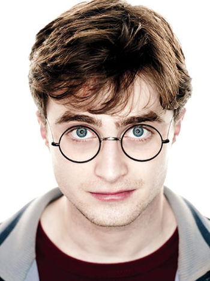
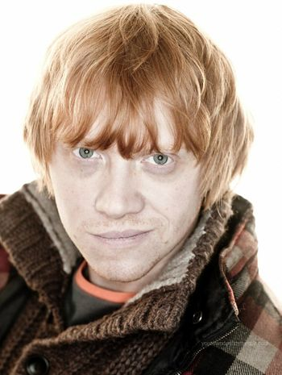
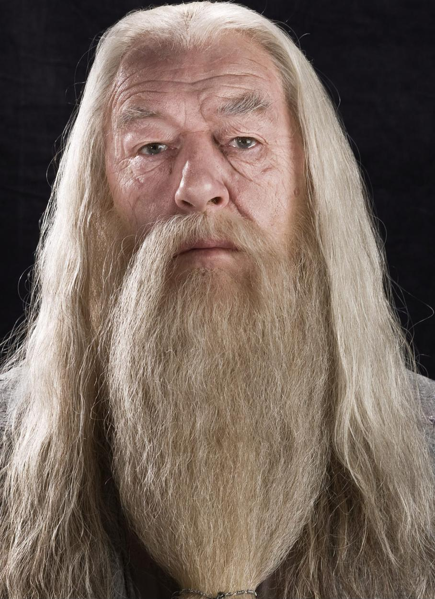
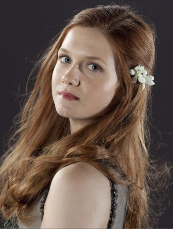
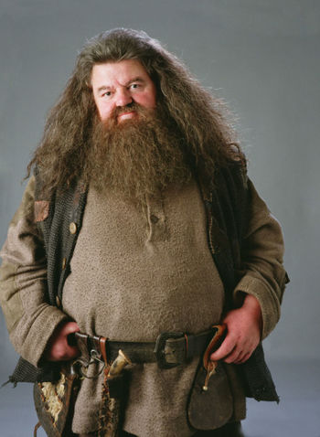
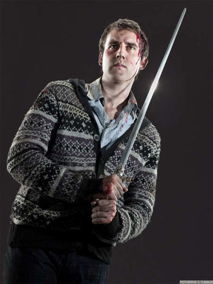
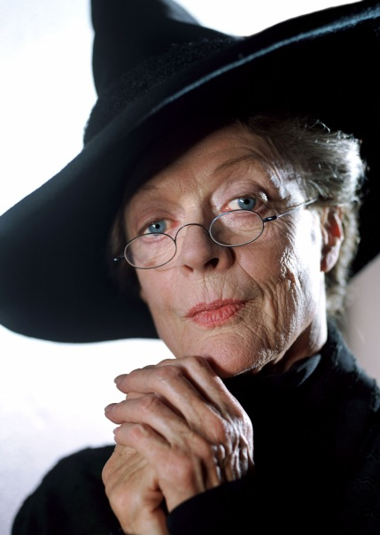
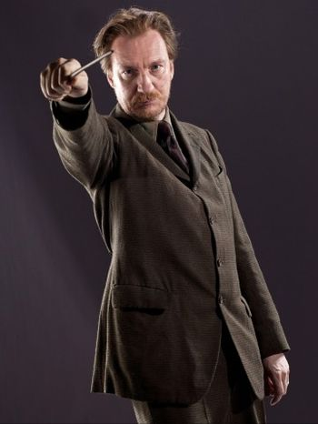
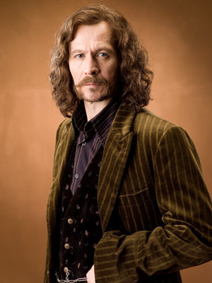

| Personnages | Biographies |
|---|---|
|  |
Harry Potter
Parents: Lily et James Potter
Harry James Potter naît le 31 juillet 1980 (le même jour d'anniversaire que J. K. Rowling). Il manque de mourir à l'âge de quinze mois, le 31 octobre 1981, lorsque Lord Voldemort, un puissant mage noir, lui jette le sortilège impardonnable de l'Avada Kedavra auquel personne n'a jamais survécu jusque là. Harry ne garde de cette attaque qu'une cicatrice en forme d'éclair sur le front. Le sort du mage noir se retourne contre lui-même, le réduisant à un être sans corps, plus faible encore qu'un fantôme mais néanmoins capable d'utiliser son pouvoir de possession. C'est la puissance de l'amour de Lily Potter, se sacrifiant pour son fils, qui provoque ce « miracle » ; une forme de magie extrêmement puissante que Voldemort était incapable de prévoir et de comprendrea 3. Cette protection reste active jusqu'à la majorité de Harry, à la condition que quelqu'un de son sang l'accueille chez lui. Harry est donc déposé par Dumbledore sur le pas de la porte du n° 4, Privet Drive, chez son oncle et sa tante moldus, seuls membres de sa famille encore vivantsa 4. Il adresse une lettre à sa tante Pétunia Dursley, sœur de Lily Evans Potter, en lui expliquant ce qui s'est produit. Cependant, Pétunia, dégoûtée par la magie de son « horrible monstre de sœur » et son « horrible mari », cache à son neveu la vérité sur la mort de ses parents et sur sa nature de sorcier, d'un commun accord avec son mari Vernon Dursley
|
|  |
Ron Weasley
Parents: Arthur et Molly Weasley
Ronald Bilius Weasley dit Ron est le sixième fils d'Arthur et Molly Weasley. Il entre à Poudlard en 1991 dans la maison Gryffondor. Il devient ami avec Harry Potter et Hermione Granger et ils forment un trio inséparable. Ensemble, ils relèvent de nombreux défis, notamment en protégeant la Pierre philosophale de Quirinus Quirrell, en formant l'armée de Dumbledore et en combattant dans de nombreuses batailles comme la bataille du Département des mystères, la bataille de la tour d'astronomie, et la bataille des sept Potter. Ron est également devenu préfet de Gryffondor et gardien de l'équipe de Quidditch de Gryffondor pendant sa scolarité. Il a arrêté ses études pour accompagner Harry et Hermione dans la chasse aux Horcruxes et combat lors de la bataille de Poudlard.
Ron est né le 1er mars 1980. Il a grandi avec les Weasley au Terrier. Les jumeaux aiment faire des taquineries et jouer des tours à Ron. Un jour, ils métamorphosent son ours en peluche en une araignée géante, provoquant son arachnophobie. À l'âge de cinq ans, ils veulent l'obliger à faire un Serment Inviolable. Fort heureusement, leur père intervient avant qu'ils n'aient achevé le sort.
|
|
Hermione Granger
Parents: Mr et Mrs Granger
Hermione Jean Granger[14] est née le 19 septembre 1979 de parents Moldus dentistes. Hermione est une élève brillante, une jeune fille généreuse et très sensible. Elle est très studieuse et adore lire.
Elle rencontre pour la première fois Harry Potter et Ron Weasley dans le Poudlard Express. Les deux garçons la considèrent d'abord comme une mademoiselle "je-sais-tout", un sentiment qui se renforce lorsqu'Hermione répond toujours aux questions des professeurs. Plus tard, Hermione se dénonce et épargne Harry et Ron quand ils lui sauvent la vie face a un troll s'étant introduit dans le château. Le trio devient très vite inséparable. Au cours de sa scolarité, Hermione développe des sentiments amoureux pour Ron. Comme ce dernier, elle suit Harry dans toutes ses aventures. Ils décident de renoncer à leur dernière année d'études afin d'accompagner Harry dans sa quête des Horcruxes et son combat contre Voldemort.
Le 1er septembre 1991, Hermione rencontre Ron Weasley et Harry Potter dans le Poudlard Express. A la cérémonie de la Répartition des élèves, Hermione est envoyée à Gryffondor tout comme Ron et Harry. Suite à une remarque de Ron sur le fait qu'elle n'avait pas d'ami, elle se réfugie dans les toilettes des filles pour pleurer. Quand Harry et Ron apprennent qu'un troll s'est introduit dans le château et se dirige vers les toilettes des filles, ils décident d'aller la sauver et parviennent à neutraliser le troll.
|
|
|  |
Albus Dumbledore
Parents: Perceval et Kandra Dumbledore
Albus Perceval Wulfric Brian Dumbledore (1881 - 30 juin 1997), est l'un des plus puissants sorciers de tous les temps, le directeur de l'école de sorcellerie Poudlard depuis 1956. Avant cette nomination en remplacement du professeur Dippet, il était professeur de métamorphose. Albus Dumbledore s'est rendu célèbre en battant le mage noir Grindelwald en 1945 et en découvrant les douze propriétés du sang de dragon. Il a entretenu des relations avec les personnalités magiques les plus remarquables de son temps, l'alchimiste Nicolas Flamel, l'historienne de la magie Bathilda Tourdesac et le théoricien de la magie Adalbert Lasornette. Il existe une carte de Chocogrenouille à son effigie. Il est le seul sorcier que Voldemort ait jamais craint.
Albus Dumbledore est l'aîné des enfants de Perceval et Kendra Dumbledore. Il naît en 1881 dans le village de Terre-en-Lande. À dix ans, il déménage avec sa famille à Godric's Hollow pour garder la cadette de la famille, Ariana, en sûreté après son traumatisme causé par trois Moldus.
|
|  |
Ginny Weasley
Parents: Arthur et Molly Weasley
Ginevra Molly Potter (née Weasley) dite Ginny est le plus jeune enfant, ainsi que la seule fille, d'Arthur et Molly Weasley. Elle est aussi la première fille dans la famille Weasley depuis sept générations. Elle entre à Poudlard en 1992 dans la maison Gryffondor. Lors de sa première année, elle est possédée par le souvenir de Tom Jedusor conservé dans un journal intime. Elle est poursuiveuse et attrapeuse pour l'équipe de Quidditch de Gryffondor. Elle est également membre de l'armée de Dumbledore et participe à la bataille du Département des mystères, à la bataille de la tour d'astronomie et à la bataille de Poudlard.
Ginny est née le 11 août 1981. Elle grandit avec les Weasley au Terrier. Le 1er septembre 1991, Ginny accompagne avec sa mère ses frères Ron, Fred, George et Percy à la gare de King's Cross pour prendre le Poudlard Express. Elle-même est encore trop jeune pour aller à l'école des sorciers et est triste de voir ses frères partir. Fred et George la rassurent, en promettant qu'ils lui enverront un siège de toilette de Poudlard. Ils lui expliquent également que le petit brun rencontré sur le quai n'est autre que le célèbre Harry Potter, son idole. À la fin de l'année, Ginny est toujours aussi fan de Harry.
|
|  |
Rubeus Hagrid
Parents: Mr Hagrid et Fridluva
Rubeus Hagrid, plus communément appelé Hagrid, est né le 6 décembre 1928, d'un humain sorcier et de la géante Fridluva, laquelle abandonna sa famille trois ans plus tard. Il est donc un demi-géant. Les géants sont très mal perçus dans le monde des sorciers, c'est pour cette raison qu'il dissimule le fait qu'il en soit un, même partiellement. Il est le gardien des Clés et des Lieux à Poudlard. Il en est aussi le garde-chasse et il enseigne les soins aux créatures magiques depuis 1993. Il est également membre de l'Ordre du Phénix depuis son origine. Il n'est pas un très bon sorcier à cause de son exclusion prématurée de Poudlard. En tant que demi-géant, il résiste bien aux maléfices.
Hagrid fut élève à Poudlard, dans la maison Gryffondor, où il arriva en 1940. Son père mourut lors de sa deuxième année d'étude et il fut renvoyé, à tort, en 1943. Le directeur de l'époque crut en effet aux accusations de Tom Jedusor, de deux ans l'aîné de Hagrid, qui fit croire que le monstre libéré de la Chambre des Secrets était l'Acromentule élevée par Hagrid et dénommée Aragog.
|
|  |
Neville Londubat
Parents: Krank et Alice Londubat
Neville Londubat[3] ( Angl. Neville Longbottom ) est un élève de Gryffondor passionné de botanique. C'est un ami de Harry Potter. Au début timide et ridicule, Neville va devenir un sorcier redoutable.
Neville Londubat est né le 30 juillet 1980 de parents sorciers, Frank et Alice Londubat, des Aurors. Il était, lui aussi tout comme Harry Potter, concerné par la prophétie car elle parlait d'un enfant né à la fin du mois de juillet et qui naitra de personnes ayant défié le Seigneur des Ténèbres par trois fois. Le 31 octobre 1981, les parents de Neville sont torturés avec le sortilège Doloris lancé par Barty Croupton Jr., Bellatrix Lestrange, son époux Rodolphus et le frère de celui-ci Rabastan. Ils essayaient de soutirer des informations à propos de l'absence de leur Maître, Voldemort. Les parents de Neville devinrent fous à cause de la douleur et furent internés dans l'hôpital des sorciers, Ste Mangouste, tandis que leurs ravisseurs furent condamnés à être emprisonnés à Azkaban, la prison des sorciers. Neville fut élevé par sa grand-mère.
|
|  |
Minerva McGonagall
Parents: Robert McGonagall et Isobel Ross
Minerva McGonagall est directrice de Poudlard. Elle est également professeur de métamorphose. Elle a aussi été directrice-adjointe de Poudlard. C'était une des collègues et amies proches d'Albus Dumbledore. McGonagall est également directrice de la maison Gryffondor. Elle fait partie de l'Ordre du Phénix. Sorcière très puissante, elle participe à la bataille de Poudlard et est l'une des premières personnes à combattre Voldemort en personne accompagnée de Kingsley Shacklebolt et Horace Slughorn.
Minerva grandit dans les Highlands d'Écosse au début du 20ème siècle et ne découvre que très lentement qu'il y a quelque chose d'étrange dans ses aptitudes ainsi que dans le mariage de ses parents. Lors de la Répartition de son arrivée à Poudlard, il apparait que Minerva est une Chapeauflou, le Choixpeau magique hésitant entre l'envoyer à Gryffondor ou Serdaigle. Elle est très vite reconnue comme l'élève la plus brillante de l'année, avec un don particulier pour la métamorphose et, à la fin de ses études, elle obtient des résultats impressionnants : meilleures notes dans ses BUSE et ses ASPIC, préfète-en-chef et lauréate du prix du Meilleur Jeune Espoir décerné par le Mensuel de la métamorphose.
|
|  |
Remus Lupin
Parents: Lyall Lupin et Esperance Howell
Remus John Lupin, surnommé Lunard ( Angl. Moony ) était un puissant sorcier, loup-garou et membre des deux Ordres du Phénix. Il est décédé lors de la bataille de Poudlard.
Remus naquit le 10 mars 1960. Enfant unique de Lyall Lupin et Espérance Howell, il était un petit garçon débordant de joie de vivre, qui manifestait déjà des signes précoces de magie.
Cependant, peu avant son cinquième anniversaire, Fenrir Greyback, un des loups-garous les plus féroce de Grande-Bretagne, qui avait eu une querelle avec son père, celui-ci ayant qualifié les loups-garou de "créatures dépourvues d’âme, diaboliques, ne méritant que la mort", se vengea en s'attaquant au jeune Remus. Greyback força la fenêtre de sa chambre et l'attaqua sauvagement, avant d'être arrêté de justesse par Lyall, juste à temps pour sauver son fils, à l'aide de puissants sortilèges. Cependant, Remus était déjà mordu et il était condamné à une existence de loup-garou.
|
|  |
Sirius Black
Parents: Orion et Walburga Black
Sirius Black, surnommé Patmol ( Angl. Padfoot ) était un sorcier de sang pur, le fils d'Orion et Walburga et le frère de Regulus. Lors de ses études à Poudlard de 1971 à 1978, il est devenu l'ami de James Potter, Remus Lupin et Peter Pettigrow et ils formèrent tous les quatre le groupe des Maraudeurs. Il fut le parrain de Harry Potter. Condamné à tort pour meurtre, il passe douze ans à la prison d'Azkaban et fut le premier sorcier connu à s'en évader.
Sirius rencontre James Potter dans le train les menant à Poudlard où ils seront répartis à Gryffondor. Ils sont devenus meilleurs amis et ont vite rencontré Remus Lupin et Peter Pettigrow. Ces derniers forment le groupe des Maraudeurs. Sirius et James sont très populaires et ils sont aussi très brillants dans leur études. Ils se montrent parfois assez hautains et arrogants, surtout avec Severus Rogue qu'ils appellent "Servilus", ce que n'apprécie pas du tout Lily Evans. Tous les quatre, ils créent la carte du Maraudeur. Quand Sirius a seize ans, il s'enfuit de la maison familiale pour aller chez les parents de James qui le considéraient comme leur deuxième fils. Sa mère le renie de la Maison des Black et l'efface d'un coup de baguette de la tapisserie de la famille Black. Un an plus tard, les Maraudeurs finissent leur scolarité. Sirius prend une maison seule, grâce à l'aide financière de son oncle Alphard.
|